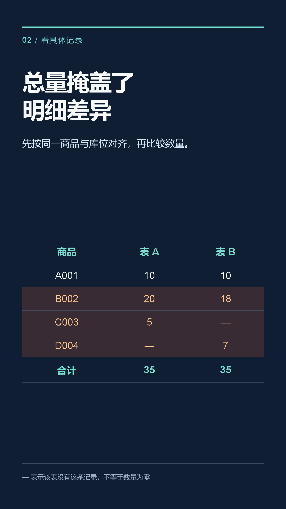
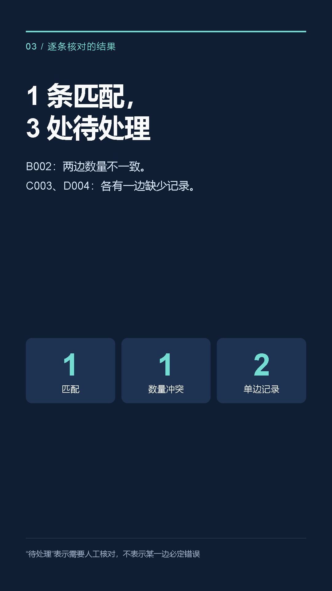
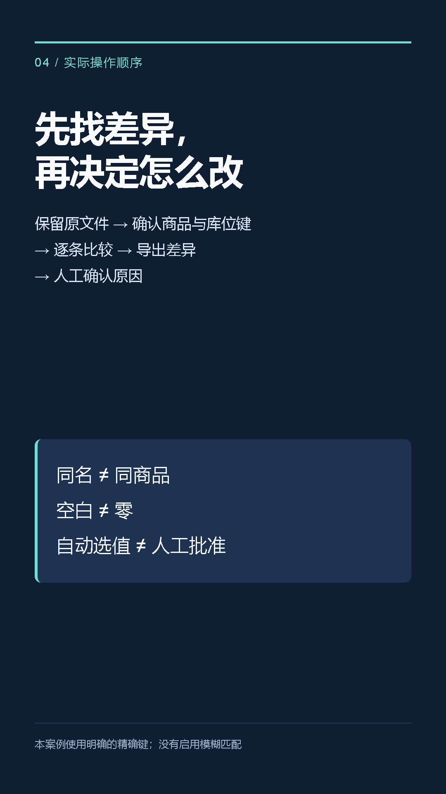
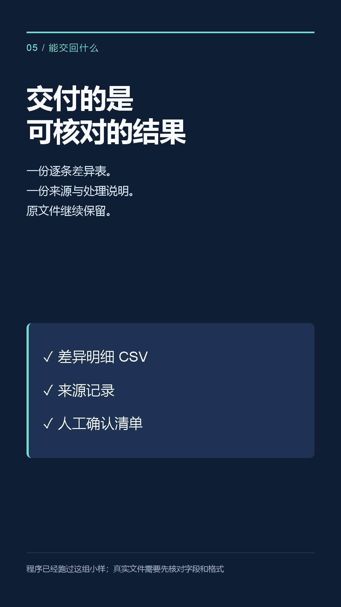

一组能复现的办公小例子 · 全部使用合成数据
数量相加的结果相同，不能证明每件商品都相同。先看四行明细，再打开工具试一遍。
| 商品键 | 表A | 表B | 结果 |
|---|---|---|---|
| A | 10 | 10 | 相同 |
| B | 20 | 18 | 数量不同 |
| C | 5 | 无此键 | 只在A |
| D | 无此键 | 7 | 只在B |
| 合计 | 35 | 35 | 仍有3处待处理 |
本例全部在主仓、SKU唯一。真实数据先确认商品和库位如何配对，再查差异原因，保留原表。
有字无声的竖屏教学视频；下方六图可单独保存。
载入六行示例，比较数量，导出带来源行号的结果。以下是实际浏览器录屏，底部加了说明条；没有音轨。
工具严格比较UTF-8 CSV文本，不直接读取XLSX，不做容差或模糊匹配。空键和重复键需要人工处理。




完整文字案例 · 各渠道投稿文案 · 下载视频、图片、输入和文案整包
AI辅助制作的原创合成案例，免费可修改；没有客户效果或收益声明。视频平台尚未投稿。